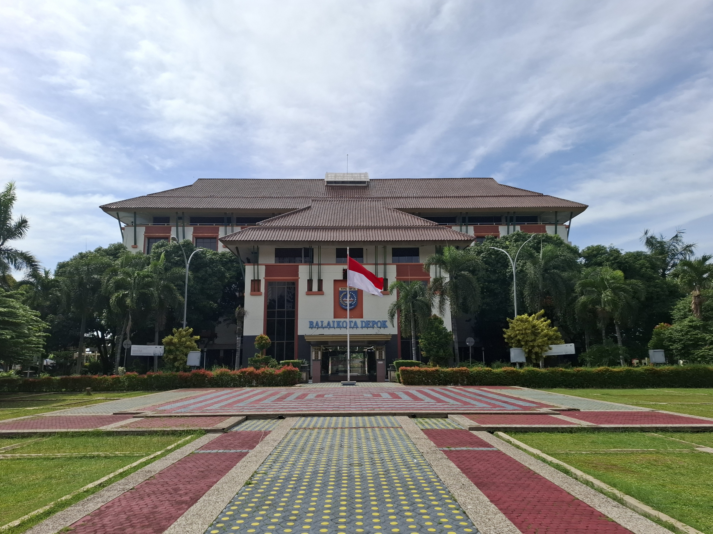
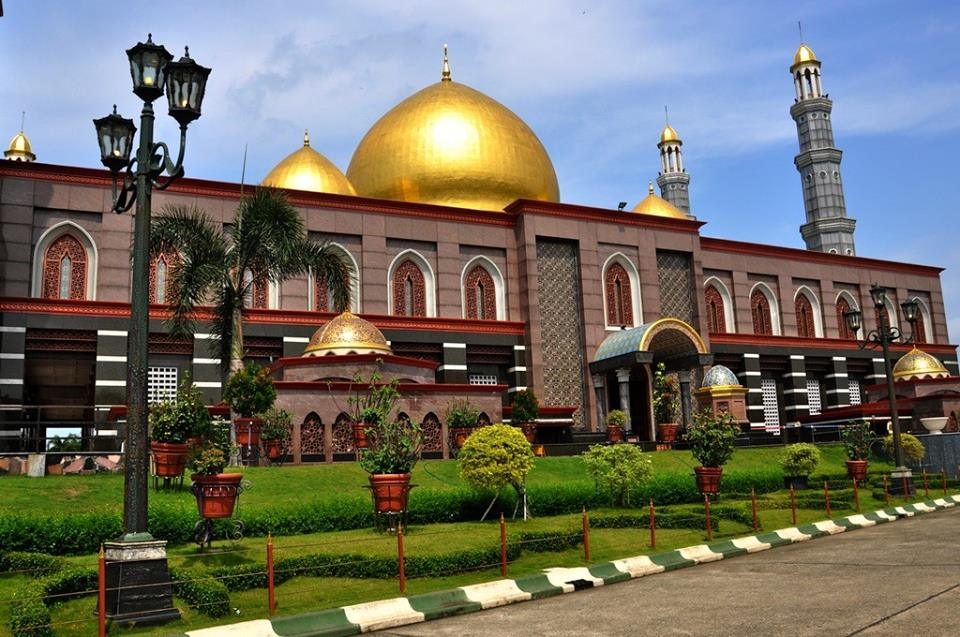
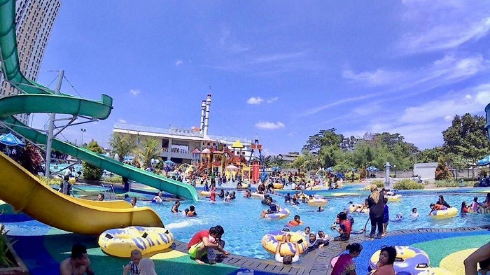
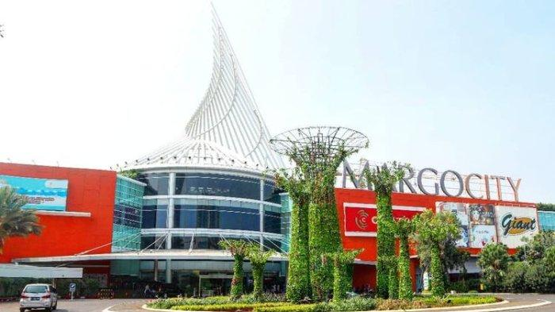

Sejarah

Pada tahun 1898, 1909, dan 1933, Kecamatan Depok berada di bawah kawedanan Parung tersebut masuk ke dalam suatu distrik yang berpusat di Parung, Afdeling Buitenzorg.Setelah dihapusnya kawedanan berdasarkan Peraturan Presiden Nomor 22 tahun 1963,Kecamatan Depok setelah dihapusnya sistem kawedanan saat itu terdiri dari 11 desa, yaitu Depok, Depok Jaya, Pancoran Mas, Mampang, Rangkapan Jaya, Rangkapan Jaya Baru, Beji, Kemirimuka, Pondokcina, Tanahbaru, dan Kukusan.
Depok pernah menjadi pusat Residensi Ommelanden van Batavia atau Keresidenan Daerah sekitar Jakarta berdasarkan Keputusan Gubernur Batavia yaitu en Ommelanden per tanggal 11 April 1949 Nomor Pz/177/G.R. yang dimuat di dalam Javasche Courant 1949 Nomor 31. Residensi ini membubarkan Regentschap Meester Cornelis yang terbentuk sejak 1925
Geografis

Secara geografis Kota Depok terletak pada koordinat 6° 19’ 00”–6° 28’ 00” Lintang Selatan dan 106° 43’ 00”–106° 55’ 30” Bujur Timur. Dengan luas wilayah sekitar 200,29 km², Depok merupakan daerah dataran rendah dengan ketinggian 50-140 mdpl dan kemiringan lerengnya kurang dari 15%.
Kota Depok dilalui sungai-sungai besar yaitu Sungai Ciliwung dan Sungai Pesanggrahan. Selain itu, ada juga 13 sub satuan wilayah aliran sungai dan 22 buah danau.
Wisata
Masjid Kubah Emas Dian Al-Mahri

Masjid Dian Al-Mahri atau lebih dikenal dengan Masjid Kubah Emas adalah sebuah kompleks masjid terbesar yang berada di Kota Depok, Provinsi Jawa Barat, Indonesia. Selain menjadi tempat ibadah umat Muslim sehari-hari, kompleks masjid ini juga menjadi kawasan wisata keluarga dan diminati banyak orang karena kubahnya yang terbuat dari emas. Karena luasnya wilayah dan aksesibilitas untuk umum, tempat ini sering menjadi tujuan liburan keluarga atau tempat beristirahat.
Masjid ini dibangun oleh Hajjah Dian Djuriah Maimun Al-Rasyid–pengusaha asal Banten–yang telah membeli tanahnya pada tahun 1996. Pembangunannya telah dimulai pada tahun 2001 dan selesai sekitar akhir tahun 2006. Masjid ini diresmikan untuk umum pada tanggal 31 Desember 2006, bertepatan dengan Iduladha kedua di tahun tersebut. Dengan luas 50 hektar, bangunan ini menempati area seluas 60 x 120 meter atau sekitar 8000 meter persegi. Masjid itu sendiri dapat menampung sekitar 20.000 Jemaah. Luas masjid dengan ukuran 50.000 m² ini sering disebut sebagai salah satu yang terbesar di Asia Tenggara.
Green Lake View Waterpark

Green Lake View Waterpark Cimanggis salah satu project PT Cempaka Group yang sudah selesai dibangun, berada di kawasan super blok Green Lake View Cimanggis, waterpark ini menunjang fasilitas hiburan bagi warga sekitar dan warga Depok keseluruhan. Kawasan Super Blok Green Lake View yang akan dibangun oleh PT Cempakagroup adalah yang pertama di Kota Depok, kedepan akan berdiri 7 Tower apartemen, mall dan perumahan.
MargoCity

Kompleks Margocity memiliki luas area 9,2 hektare yang terdiri dari mal, hotel dengan nama The Margo Hotel (sebelumnya kompleks olahraga O Zone), serta satu bangunan peninggalan Belanda yang dikenal dengan Rumah Depok Lama (Old House). Bangunan tersebut kini ditempati oleh Starbucks Reserve. Margocity berada di Jalan Margonda Raya sebagai pusat Kota Depok dan tepat berbatasan dengan mal lainnya, yaitu Depok Town Square.
Sejak 2021, perluasan mal (extension) mulai dibuka untuk umum dengan pemindahan Foodcourt serta pembukaan tenant lainnya seperti Farmers Market, Max Fashions, dan lain-lain. Selain itu, di lantai LG juga telah dibuka area baru bernama Foodstreet, yang mana sebagian tenant merupakan pindahan dari lantai GF